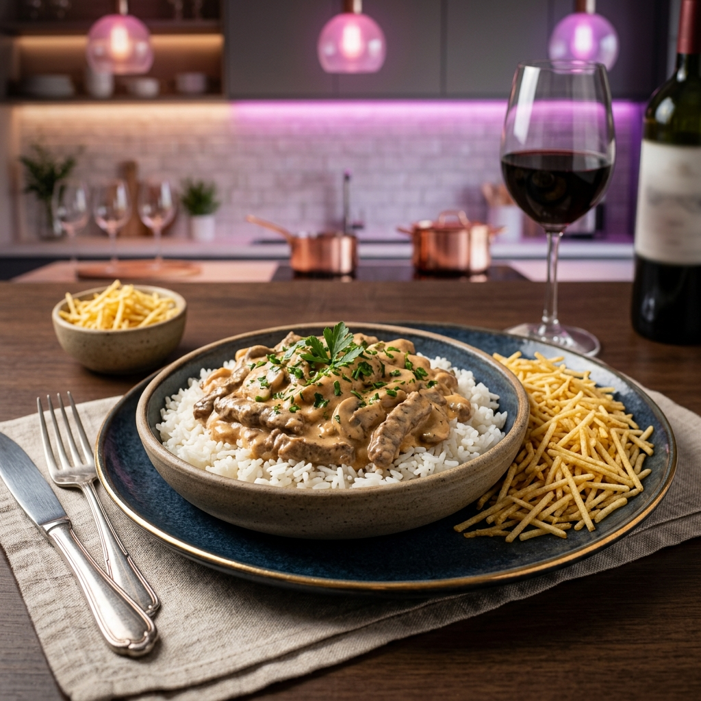

O Gisrecipes oferece milhares de receitas atualizadas diariamente para ajudar você em qualquer situação. Nosso objetivo é facilitar o preparo de pratos incríveis, apoiando tanto iniciantes quanto quem já tem experiência na cozinha. Disponibilizamos receitas em formatos de vídeo e texto, sempre com explicações detalhadas e passo a passo, para garantir praticidade, clareza e bons resultados em cada preparo.